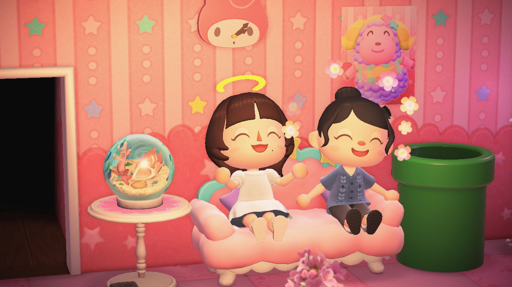
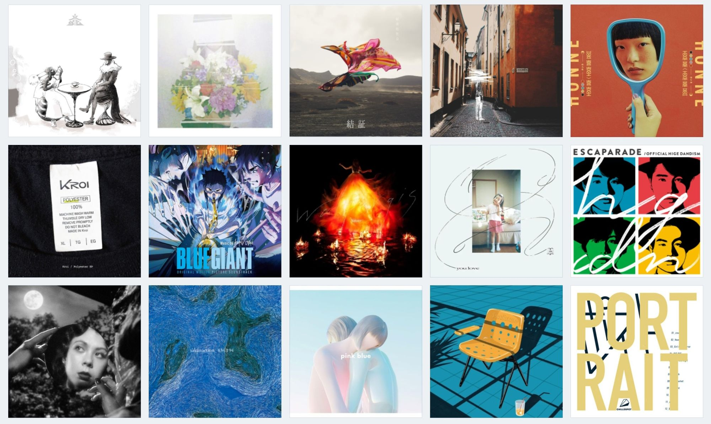

취미1-다이어리 꾸미기
스티커·문구용품 모으기를 좋아해요! 다이어리 꾸미기도 열심히 하고
있어요ㅎㅎ 매번 다이어리를 3월까지만 쓰다가 중도하차하는 게 그 해의
관례였는데(…) 올해는 반드시 12월까지 가득 채우는게 목표입니다🔥
취미2-게임

게임을 정말정말정말 좋아해요! 온라인 게임, 스팀 게임, 닌텐도 2D/3DS/스위치
등등 다양한 게임 하는 게 제 취미 중 하나랍니다 최근에 가장 재밌게 한
게임은 젤다의 전설 왕국의 눈물, 발더스 게이트 3입니다!
노래

노래는 JPOP 좋아합니다! 요즘 주로 들겨듣는 가수는
sakanaction, chilldspot, 히츠지분가쿠(羊文学), Penthouse, Kroi에요
2년 안에 섬머소닉 가는 게 버킷리스트입니다ㅎㅎ
제 음악 취향이 좀 더 궁금하신 분은 이리로…
그 외에도 드라마 영화 웹툰 뜨개질 등등… 저어어어엉말 많은 관심사가 있으니
비슷한 취향을 가지신 분이라면 언제든지 대환영이에요 ◠ ̫◠
각오
입학할 때부터 관심이 있었던 동아리이고, 멋사를 알게 된 계기로 관심 진로가
정해지기도 해 합격했다는 사실이 꿈만 같습니다…✨
멋사 활동을 통해 IT 개발이라는 같은 관심사를 가진 아기사자 덕우 여러분과 함께
많은 성장 이뤘으면 좋겠어요!
처음부터 끝까지 항상 열정적인 아기사자가 되겠습니다
모쪼록 한 해 동안 잘 부탁드립니다☺